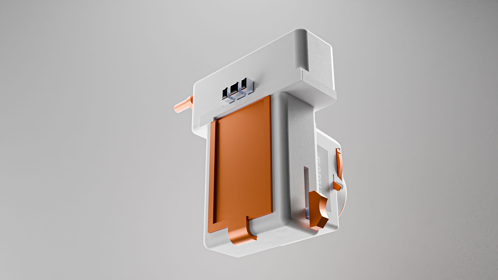
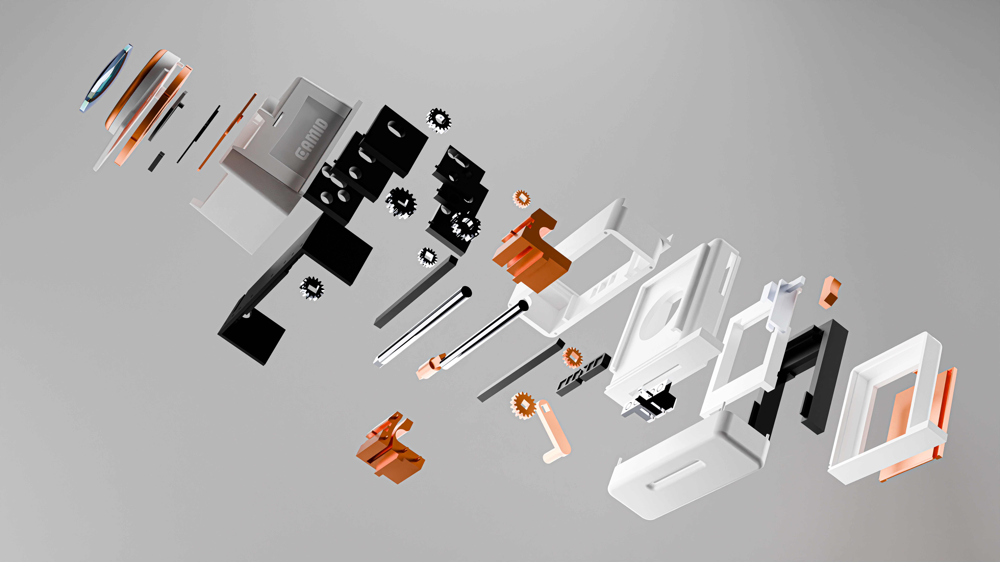

外壳与结构边界
PrinterCase、Tank case 7003、Shutter Box/Case 4001 构成三个可识别的结构区域。
STEP 产品节点把一台真实设计的纯机械拍立得，拆成一连串可以亲手拨动的因果关系。先找到零件，再猜它的工作，最后用运动模型验证。

这张爆炸图来自项目的产品渲染参考；热点对应 STEP 装配中已确认的产品节点。点击不同区域，右侧会显示它在学习路线中的角色。

Visual reference · exploded assemblyPrinterCase、Tank case 7003、Shutter Box/Case 4001 构成三个可识别的结构区域。
STEP 产品节点Shutter1/2/3、Wheel^Shutter、Trigger、Glass 在同一子装配内出现。
STEP 产品节点CrankHandle、CrankShaft、Big gear、RollerGear 与多个圆辊/方辊节点组成输出路径。
运动方向待实机验证拖动曲柄速度，观察教学模型中的力如何从 CrankHandle 传给齿轮和滚轮。这个动画表达 STEP 节点之间的合理因果关系，不等同于 SolidWorks mates 仿真。
在 Shutter 子装配里，Glass、Wheel^Shutter、Trigger 和三片快门片同时出现。按下 Trigger，先观察遮挡，再观察光线是否通过。
点击橙色 Trigger，模拟 Wheel^Shutter 驱动三片快门依次让开。页面只呈现结构教学，不推断真实曝光时间。
Tank 子装配包含 front tank、back tank、lever、lever support、Trap 与 film dimensions。用这个侧剖视教学模型，追踪一张薄片的入口、承托和释放。
按“拨动 Lever”，观察承托件和 Trap 的教学动作。真实纸路、间隙与摩擦仍需工程图和实机拆装补充。
适合懂了鸭的课堂化内容入口：每一站都能独立运行，也能在最后汇成一条完整的机械成像因果链。
用真实产品图和 STEP 节点建立零件识别。
从曲柄、轴、齿轮到辊筒，追踪一圈运动。
把 Trigger、快门片和 Glass 放进同一时序。
将 Tank、Trap、FilmExit 与最终输出连起来。